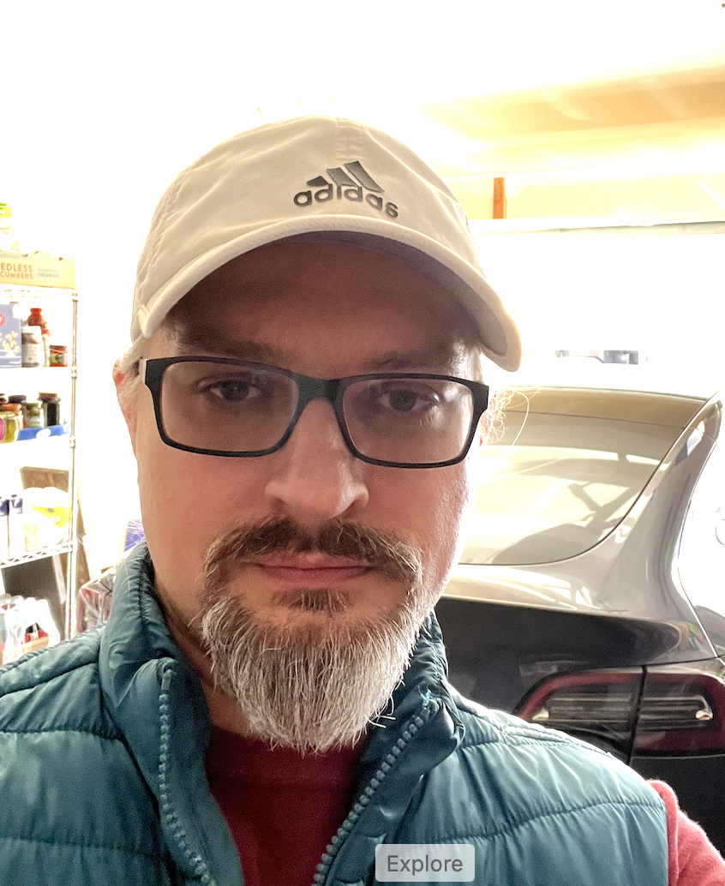

Ihor Lazarkov
Fullstack Developer
Automation Test Architect

phone
+1 (615) 506 - 9411

email
ilazarkov@gmail.com
ABOUT ME
Versatile and results-driven Full Stack Software Developer with a robust foundation as a Senior Software Development Engineer in Test (SDET). Bringing over 8 years of hands-on experience in software development, automation frameworks, and deployment, coupled with 15 years of expertise in quality assurance.
WHAT I DO!
Web Development
As a client centric Full Stack Developer I pation about design
and implement programmatic solutions across tech stack.
 Development in Test
Development in Test
Although development for testing close to canonic
understanding of a developmer, it requires deeper knowledge in
testing technices, design of test cases. With great attention
to details I meticulously conduct necessary amount of testing
to provide precise feedback to test manager.
DevOps
Perform integration of sowfare projects into CI/CD. Write
necessary build scripts to perform configured flow to perform
build, testing and release. Schedule execution of such
scripts. Create specifice triggers.
Automation Test
Design and implement of automation test project to perform
function testing for End-to-End test scenairos for front-back
and back-end applications. Analyze function requirements to
make test case design for automation tesing.
work
projects
education